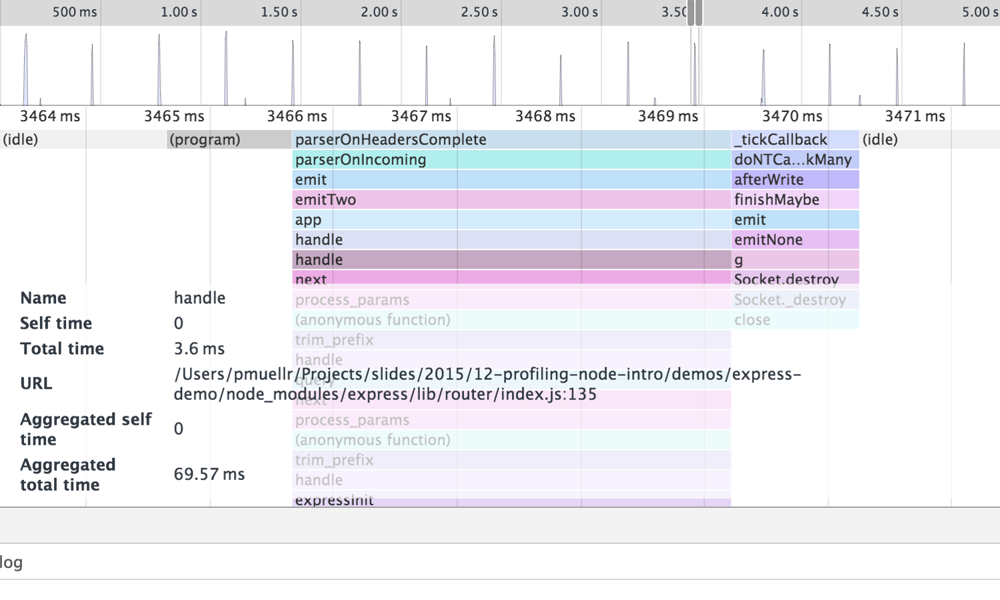
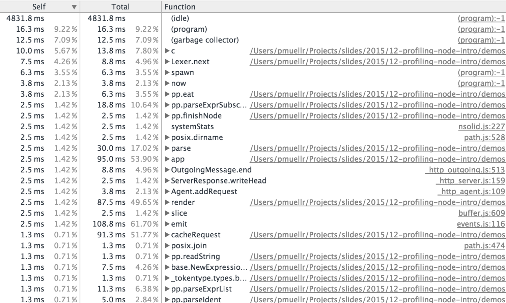
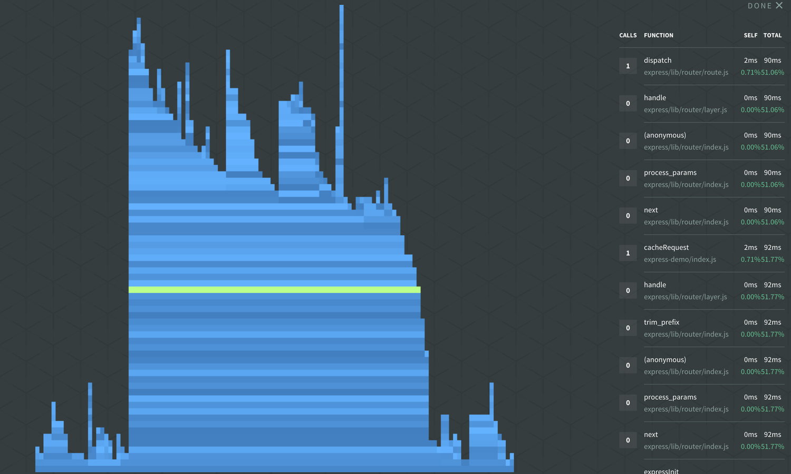
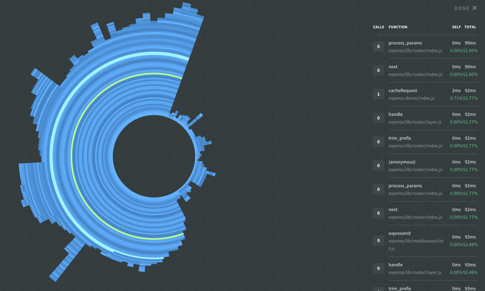
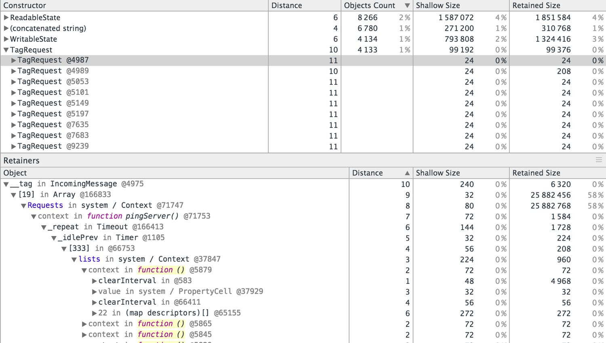

# profiling Node.js applications Patrick Mueller [`@pmuellr`](https://twitter.com/pmuellr), [`muellerware.org`](http://muellerware.org)<br> principal software engineer at [Elastic](https://elastic.co)<br> <div class="smaller"><div class="smaller"><div class="smaller"> <a href="http://pmuellr.github.io/slides/2019/05-profiling-node"> http://pmuellr.github.io/slides/2019/05-profiling-node </a> <br> <a href="http://pmuellr.github.io/slides/2019/05-profiling-node/slides.pdf"> http://pmuellr.github.io/slides/2019/05-profiling-node/slides.pdf </a> <br> <a href="http://pmuellr.github.io/slides/"> http://pmuellr.github.io/slides/ </a> (all of Patrick's slides) </div></div></div> <div class="toolBar no-print"> <div class="navHelp" title="use the cursor keys to navigate, 'n' to toggle nav buttons, 's' to toggle control panel"> <img class="button-1st" height=16 src="../../glyphicons_free/glyphicons/png/glyphicons_171_fast_backward.png"> <img class="button-prev" height=16 src="../../glyphicons_free/glyphicons/png/glyphicons_172_rewind.png"> <img class="button-next" height=16 src="../../glyphicons_free/glyphicons/png/glyphicons_176_forward.png"> </div> <div> </div> <div class="controlPanel" title="'s' to toggle control panel"> <img class="button-clicker" height=16 src="../../glyphicons_free/glyphicons/png/glyphicons_032_wifi_alt.png" title="use clicker"> <img class="button-hd" height=16 src="../../glyphicons_free/glyphicons/png/glyphicons_391_video_hd.png" title="toggle HD"> </div> </div> --- layout: true <div class="page-context"> <span class="smaller"><span class="smaller"><span class="smaller"> <tt></tt> </span></span></span> </div> <div class="page-icon"> <span class="smaller"><span class="smaller"><span class="smaller"> <tt>profiling Node.js applications</tt> </span></span></span> </div> {{content}} <div class="toolBar no-print"> <div class="navHelp" title="use the cursor keys to navigate, 'n' to toggle nav buttons, 's' to toggle control panel"> <img class="button-1st" height=16 src="../../glyphicons_free/glyphicons/png/glyphicons_171_fast_backward.png"> <img class="button-prev" height=16 src="../../glyphicons_free/glyphicons/png/glyphicons_172_rewind.png"> <img class="button-next" height=16 src="../../glyphicons_free/glyphicons/png/glyphicons_176_forward.png"> </div> <div> </div> <div class="controlPanel" title="'s' to toggle control panel"> <img class="button-clicker" height=16 src="../../glyphicons_free/glyphicons/png/glyphicons_032_wifi_alt.png" title="use clicker"> <img class="button-hd" height=16 src="../../glyphicons_free/glyphicons/png/glyphicons_391_video_hd.png" title="toggle HD"> </div> </div> --- ## what is profiling? * gaining insight into what your code is doing * typically involving finding out: * why your code is so slow! * what are you doing with all that memory! --- ## why should you profile your code? * save money * run with less RAM * run with less CPU * delight customers * your app runs faster --- ## what kind of profiling for Node.js? * **<u>performance</u>** with V8's CPU profiler * **<u>memory</u>** with V8's heap snapshots --- ## using the tools * start your app with the Node.js `--inspect` option * open URL `chrome://inspect/` in Chrome * click the **inspect** link under **Remote Target** --- <img width="100%" src="images/chrome-inspect.png"> --- layout: true <div class="page-context"> <span class="smaller"><span class="smaller"><span class="smaller"> <tt></tt> </span></span></span> </div> <div class="page-icon"> <span class="smaller"><span class="smaller"><span class="smaller"> <tt>profiling Node.js applications</tt> </span></span></span> </div> {{content}} <div class="toolBar no-print"> <div class="navHelp" title="use the cursor keys to navigate, 'n' to toggle nav buttons, 's' to toggle control panel"> <img class="button-1st" height=16 src="../../glyphicons_free/glyphicons/png/glyphicons_171_fast_backward.png"> <img class="button-prev" height=16 src="../../glyphicons_free/glyphicons/png/glyphicons_172_rewind.png"> <img class="button-next" height=16 src="../../glyphicons_free/glyphicons/png/glyphicons_176_forward.png"> </div> <div> </div> <div class="controlPanel" title="'s' to toggle control panel"> <img class="button-clicker" height=16 src="../../glyphicons_free/glyphicons/png/glyphicons_032_wifi_alt.png" title="use clicker"> <img class="button-hd" height=16 src="../../glyphicons_free/glyphicons/png/glyphicons_391_video_hd.png" title="toggle HD"> </div> </div> --- class: center, middle # profiling performance --- layout: true <div class="page-context"> <span class="smaller"><span class="smaller"><span class="smaller"> <tt>profiling performance</tt> </span></span></span> </div> <div class="page-icon"> <span class="smaller"><span class="smaller"><span class="smaller"> <tt>profiling Node.js applications</tt> </span></span></span> </div> {{content}} <div class="toolBar no-print"> <div class="navHelp" title="use the cursor keys to navigate, 'n' to toggle nav buttons, 's' to toggle control panel"> <img class="button-1st" height=16 src="../../glyphicons_free/glyphicons/png/glyphicons_171_fast_backward.png"> <img class="button-prev" height=16 src="../../glyphicons_free/glyphicons/png/glyphicons_172_rewind.png"> <img class="button-next" height=16 src="../../glyphicons_free/glyphicons/png/glyphicons_176_forward.png"> </div> <div> </div> <div class="controlPanel" title="'s' to toggle control panel"> <img class="button-clicker" height=16 src="../../glyphicons_free/glyphicons/png/glyphicons_032_wifi_alt.png" title="use clicker"> <img class="button-hd" height=16 src="../../glyphicons_free/glyphicons/png/glyphicons_391_video_hd.png" title="toggle HD"> </div> </div> --- ## what does V8's CPU profiler do? * **start profiler**: at regular intervals, V8 will capture current stack trace, with time stamp, and source file / line numbers * **stop profiler**: profiler will aggregate the stack trace information, and produce a JSON data structure for analysis tools --- ## understanding CPU profiling * intro: [Google Developers: Speed Up JavaScript Execution](https://developers.google.com/web/tools/chrome-devtools/profile/rendering-tools/js-execution?hl=en) * provides times spent executing functions: * **<u>self time</u>** - time to run the function, **not** including any functions that it called * **<u>total time</u>** - time to run the function, including any functions that it called --- **time-line from Chrome Dev Tools**  --- **table from Chrome Dev Tools**  --- **flame graph from N|Solid**  --- **sunburst from N|Solid**  --- layout: true <div class="page-context"> <span class="smaller"><span class="smaller"><span class="smaller"> <tt></tt> </span></span></span> </div> <div class="page-icon"> <span class="smaller"><span class="smaller"><span class="smaller"> <tt>profiling Node.js applications</tt> </span></span></span> </div> {{content}} <div class="toolBar no-print"> <div class="navHelp" title="use the cursor keys to navigate, 'n' to toggle nav buttons, 's' to toggle control panel"> <img class="button-1st" height=16 src="../../glyphicons_free/glyphicons/png/glyphicons_171_fast_backward.png"> <img class="button-prev" height=16 src="../../glyphicons_free/glyphicons/png/glyphicons_172_rewind.png"> <img class="button-next" height=16 src="../../glyphicons_free/glyphicons/png/glyphicons_176_forward.png"> </div> <div> </div> <div class="controlPanel" title="'s' to toggle control panel"> <img class="button-clicker" height=16 src="../../glyphicons_free/glyphicons/png/glyphicons_032_wifi_alt.png" title="use clicker"> <img class="button-hd" height=16 src="../../glyphicons_free/glyphicons/png/glyphicons_391_video_hd.png" title="toggle HD"> </div> </div> --- class: center, middle # profiling memory --- layout: true <div class="page-context"> <span class="smaller"><span class="smaller"><span class="smaller"> <tt>profiling memory</tt> </span></span></span> </div> <div class="page-icon"> <span class="smaller"><span class="smaller"><span class="smaller"> <tt>profiling Node.js applications</tt> </span></span></span> </div> {{content}} <div class="toolBar no-print"> <div class="navHelp" title="use the cursor keys to navigate, 'n' to toggle nav buttons, 's' to toggle control panel"> <img class="button-1st" height=16 src="../../glyphicons_free/glyphicons/png/glyphicons_171_fast_backward.png"> <img class="button-prev" height=16 src="../../glyphicons_free/glyphicons/png/glyphicons_172_rewind.png"> <img class="button-next" height=16 src="../../glyphicons_free/glyphicons/png/glyphicons_176_forward.png"> </div> <div> </div> <div class="controlPanel" title="'s' to toggle control panel"> <img class="button-clicker" height=16 src="../../glyphicons_free/glyphicons/png/glyphicons_032_wifi_alt.png" title="use clicker"> <img class="button-hd" height=16 src="../../glyphicons_free/glyphicons/png/glyphicons_391_video_hd.png" title="toggle HD"> </div> </div> --- ## what are V8 heap snapshots? * JSON file describing every reachable JavaScript object in the application; taking a snapshot always starts with a garbage collection * JSON files are ... large; figure 2x heap memory allocated by Node.js --- ## understanding heap snapshots * intro: [Google Developers: Viewing Heap Snapshots](https://developers.google.com/web/tools/chrome-devtools/profile/memory-problems/heap-snapshots) * object sizes/counts, grouped by constructor * **<u>shallow size</u>** - the size of memory held by an object itself * **<u>retained size</u>** - the size of memory that can be freed once an object is deleted --- **heapmap from Chrome Dev Tools**  --- ## what kind of output can you get? * large JSON file - could be 100's of MB; figure 2x allocated heap * can "diff" snapshots to help identify leaks * can drill into or out from references in Chrome Dev Tools; references / referenced by --- layout: true <div class="page-context"> <span class="smaller"><span class="smaller"><span class="smaller"> <tt></tt> </span></span></span> </div> <div class="page-icon"> <span class="smaller"><span class="smaller"><span class="smaller"> <tt>profiling Node.js applications</tt> </span></span></span> </div> {{content}} <div class="toolBar no-print"> <div class="navHelp" title="use the cursor keys to navigate, 'n' to toggle nav buttons, 's' to toggle control panel"> <img class="button-1st" height=16 src="../../glyphicons_free/glyphicons/png/glyphicons_171_fast_backward.png"> <img class="button-prev" height=16 src="../../glyphicons_free/glyphicons/png/glyphicons_172_rewind.png"> <img class="button-next" height=16 src="../../glyphicons_free/glyphicons/png/glyphicons_176_forward.png"> </div> <div> </div> <div class="controlPanel" title="'s' to toggle control panel"> <img class="button-clicker" height=16 src="../../glyphicons_free/glyphicons/png/glyphicons_032_wifi_alt.png" title="use clicker"> <img class="button-hd" height=16 src="../../glyphicons_free/glyphicons/png/glyphicons_391_video_hd.png" title="toggle HD"> </div> </div> --- class: center, middle # using the tools --- ## profiling tools * [node --inspect](https://nodejs.org/dist/latest-v6.x/docs/api/debugger.html#debugger_v8_inspector_integration_for_node_js) * [NodeSource N|Solid](https://nodesource.com/products/nsolid) * generates CPU profiles and heap snapshots that can be further analyzed by CDT (and the UI for `node --inspect`) --- ## demo app expecting faster response time - **what's slowing down this app?** this app seems to be leaking memory - **what objects are leaking?** * [source for the express-demo](demos/express-demo.js.html) * see the instructions in [demos/README.md](demos/README.md) --- layout: true <div class="page-context"> <span class="smaller"><span class="smaller"><span class="smaller"> <tt></tt> </span></span></span> </div> <div class="page-icon"> <span class="smaller"><span class="smaller"><span class="smaller"> <tt>profiling Node.js applications</tt> </span></span></span> </div> {{content}} <div class="toolBar no-print"> <div class="navHelp" title="use the cursor keys to navigate, 'n' to toggle nav buttons, 's' to toggle control panel"> <img class="button-1st" height=16 src="../../glyphicons_free/glyphicons/png/glyphicons_171_fast_backward.png"> <img class="button-prev" height=16 src="../../glyphicons_free/glyphicons/png/glyphicons_172_rewind.png"> <img class="button-next" height=16 src="../../glyphicons_free/glyphicons/png/glyphicons_176_forward.png"> </div> <div> </div> <div class="controlPanel" title="'s' to toggle control panel"> <img class="button-clicker" height=16 src="../../glyphicons_free/glyphicons/png/glyphicons_032_wifi_alt.png" title="use clicker"> <img class="button-hd" height=16 src="../../glyphicons_free/glyphicons/png/glyphicons_391_video_hd.png" title="toggle HD"> </div> </div> --- class: center, middle # demo time! --- layout: true <div class="page-context"> <span class="smaller"><span class="smaller"><span class="smaller"> <tt></tt> </span></span></span> </div> <div class="page-icon"> <span class="smaller"><span class="smaller"><span class="smaller"> <tt>profiling Node.js applications</tt> </span></span></span> </div> {{content}} <div class="toolBar no-print"> <div class="navHelp" title="use the cursor keys to navigate, 'n' to toggle nav buttons, 's' to toggle control panel"> <img class="button-1st" height=16 src="../../glyphicons_free/glyphicons/png/glyphicons_171_fast_backward.png"> <img class="button-prev" height=16 src="../../glyphicons_free/glyphicons/png/glyphicons_172_rewind.png"> <img class="button-next" height=16 src="../../glyphicons_free/glyphicons/png/glyphicons_176_forward.png"> </div> <div> </div> <div class="controlPanel" title="'s' to toggle control panel"> <img class="button-clicker" height=16 src="../../glyphicons_free/glyphicons/png/glyphicons_032_wifi_alt.png" title="use clicker"> <img class="button-hd" height=16 src="../../glyphicons_free/glyphicons/png/glyphicons_391_video_hd.png" title="toggle HD"> </div> </div> --- class: center, middle # profiling tips --- layout: true <div class="page-context"> <span class="smaller"><span class="smaller"><span class="smaller"> <tt>profiling tips</tt> </span></span></span> </div> <div class="page-icon"> <span class="smaller"><span class="smaller"><span class="smaller"> <tt>profiling Node.js applications</tt> </span></span></span> </div> {{content}} <div class="toolBar no-print"> <div class="navHelp" title="use the cursor keys to navigate, 'n' to toggle nav buttons, 's' to toggle control panel"> <img class="button-1st" height=16 src="../../glyphicons_free/glyphicons/png/glyphicons_171_fast_backward.png"> <img class="button-prev" height=16 src="../../glyphicons_free/glyphicons/png/glyphicons_172_rewind.png"> <img class="button-next" height=16 src="../../glyphicons_free/glyphicons/png/glyphicons_176_forward.png"> </div> <div> </div> <div class="controlPanel" title="'s' to toggle control panel"> <img class="button-clicker" height=16 src="../../glyphicons_free/glyphicons/png/glyphicons_032_wifi_alt.png" title="use clicker"> <img class="button-hd" height=16 src="../../glyphicons_free/glyphicons/png/glyphicons_391_video_hd.png" title="toggle HD"> </div> </div> --- ## profiling performance * look for **width** in trace visualizations; height only shows stack trace which may not have any perf consequences * for N|Solid, "script" profiling a web server: start profile, run load tester, stop profile * use node/v8 option `--no-use-inlining` to turn off function inlining; stack traces may make more sense (but no inlining!) --- ## profiling memory * easiest way to find a memory leak: * take a heap snapshot; run load tester; take another heap snapshot; diff in Chrome Dev Tools * 'tag' objects you think might be leaking w/easy to find class: `req.__tag = new TagRequest()` --- layout: true <div class="page-context"> <span class="smaller"><span class="smaller"><span class="smaller"> <tt></tt> </span></span></span> </div> <div class="page-icon"> <span class="smaller"><span class="smaller"><span class="smaller"> <tt>profiling Node.js applications</tt> </span></span></span> </div> {{content}} <div class="toolBar no-print"> <div class="navHelp" title="use the cursor keys to navigate, 'n' to toggle nav buttons, 's' to toggle control panel"> <img class="button-1st" height=16 src="../../glyphicons_free/glyphicons/png/glyphicons_171_fast_backward.png"> <img class="button-prev" height=16 src="../../glyphicons_free/glyphicons/png/glyphicons_172_rewind.png"> <img class="button-next" height=16 src="../../glyphicons_free/glyphicons/png/glyphicons_176_forward.png"> </div> <div> </div> <div class="controlPanel" title="'s' to toggle control panel"> <img class="button-clicker" height=16 src="../../glyphicons_free/glyphicons/png/glyphicons_032_wifi_alt.png" title="use clicker"> <img class="button-hd" height=16 src="../../glyphicons_free/glyphicons/png/glyphicons_391_video_hd.png" title="toggle HD"> </div> </div> --- class: center, middle # `fin`